第十三讲 简单的统筹规划问题
这一讲我们讨论有关物资调运、下料问题及配套生产等实例。
例1 某工地A有20辆卡车，要把60车渣土从A运到B，把40车砖从C运到D（工地道路图如右图所示），问如何调运最省汽油？
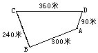
分析 把渣土从A运到B或把砖从C运到D，都无法节省汽油.只有设法减少跑空车的距离，才能省汽油。解：如果各派10辆车分别运渣土和砖，那么每运一车渣土要空车跑回300米，每运一车砖则要空车跑回360米，这样到完成任务总共空车跑了
300×60＋360×40=32400（米）。
如果一辆车从A→B→C→D→A跑一圈，那么每运一车渣土、再运一车砖要空车跑
240+90＝330（米）.
因此，先派20辆车都从A开始运渣土到B，再空车开往C运砖到D后空车返回A，这样每辆车跑两圈就完成了运砖任务.然后再派这20辆车都从A运渣土到B再空车返回A，则运渣土任务也完成了.这时总共空车跑了
330×40+300×20＝19200（米）.
后一种调运方案比前一种减少跑空车13200米，这是最佳节油的调运方案。
说明：“节省跑空车的距离”是物资调运问题的一个原则：下面通过例子再介绍“避免对流”的原则。
例2 一支勘探队在五个山头A、B、C、D、E设立了基地，人数如右图所示.为调整使各基地人数相同，如何调动最方便？（调动时不考虑路程远近）
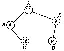
分析 在人员调运时不考虑路程远近的因素，就只需避免两个基地之间相互调整，即“避免对流现象”。
解：五个基地人员总数为
17+4+16+14+9=60（人）
依题意，调整后每个基地应各有
60÷5=12（人）。
因此，需要从多于12人的基地A、C、D向不足12人的基地B、E调人.为了避免对流，经试验容易得到调整方案如下：
先从D调2人到E，这样E尚缺1人；再由A调1人给E，则E达到要求.此时，A尚多余4人，C也多余4人，总共8人全部调到B，则B亦符合要求。
调动示意图如右图所示.这样的图形叫做物资流向图.用流向图代替调运方案，能直观地看出调运状况及有无对流现象，又可避免列表和计算的麻烦，图中箭头表示流向，箭杆上
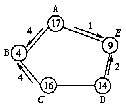
的数字表示流量。
说明：发生对流的调运方案不可能是最优方案.这个原则可以证明：
如右图，设A1B2＝a千米，B2B1=b千米，B1A2＝c千米.如果从A1运1吨货物到B1，同时又从A2运1吨货物到B2，那么在B1B2之间A1的物资从西向东运输，A2的货物从东向西运输，两者发生对流，于是这样调动的总吨千米数为
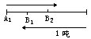
（a＋b）+（b＋c）＝a＋c+2b.
而如果从A1运1吨货物到B2，同时从A2运1吨货物到B1，栽蛟耸渥芏智资猘+c.显然
a+c＜a+c+2b。
例3 在一条公路上每隔100千米有一个仓库（如右图，）共有5个仓库.一号仓库存有10吨货物，二号仓库有20吨货物，五号仓库存有40吨货物，其余两个仓库是空的。现在想把所有的货物集中存放在一个仓库里，如果每吨货物运输1公里需要0.5元运输费，那么最少要多少运费才行？
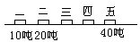
分析 欲使花费的运输费少，关键在于运输的货物和路程尽可能少，实际经验告诉我们一个原则——“小往大处靠”.下面就以两地调运问题为例加以计算验证：如上图，在公路上A、B两地各有10吨、15吨麦子，问打麦场建在何处运费最少？
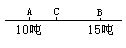
设打麦场建在C点，则总运费是（假定每吨小麦运输1千米的费用是a元）
W＝10×a×AC＋15×a×BC
＝10a×AC＋10a×BC＋5a×BC
＝10a×（AC＋BC）＋5a×BC
=10a×AB＋5a×BC
上式中10a×AB是固定的值，不随C点的选取而改变；只有5a×BC随BC的变化而改变，若BC越小，则W也越小.当BC=0时，即C点与B点重合时，W的值最小.因此打麦场建在B点时总运费是10a×AB（元）为最少.显然当打麦场建在AB线段之外时，总运费都大于10a×AB（元）。解：根据“小往大处靠”的原则，先把一号仓库的10吨货物送往二号仓库集中，需运费
10×0.5×100=500（元）。
这时可以认为二号仓库有30吨货物，而五号仓库有40吨货物，于是又应把二号仓库的30吨货物运往五号仓库集中，需运费
30×0.5×300=4500（元）。
所以，把货物集中存放在五号仓库时所花运费最少，需要
500＋4500=5000（元）。
说明：“小往大处靠”的原则也不是一成不变的，具体问题还要具体分析。
再举两例如下：
例如一号仓库有20吨货物，二号仓库有30吨货物，其他仓库存货照样如前，那么应该往哪个仓库集中呢？首先仍应把一号仓库的20吨货物运往二号仓库集中，然后再把五号仓库的40吨货物也运往二号仓库集中，这样运费最少。
又如一号仓库有30吨货物，二号仓库有20吨货物，其他仓库存货仍然如前，那么应该往哪个仓库集中呢？先把一号仓库的30吨货物运往二号仓库集中，再把五号仓库的40吨货物也运往二号仓库集中，这样运费最省.（想想为什么？）
还有一点值得注意，在决定货物往何处集中时，起决定作用的是货物的重量，至于距离仅仅是为了计算运费.如果把本题中各个仓库之间的距离换成另外一些数值，仍应该把货物集中到五号仓库。
本题可以推广为一般命题：“一条公路上有n个仓库，它们分别存货A1吨、A2吨、…、an吨.现在需要把所有的货物集中存放在一个仓库里，应该选取哪个仓库可以使总运输费最少？”它的解法将涉及到一次函数的知识，同学们在学过初三代数之后就会完全明白了。
例4 189米长的钢筋要剪成4米或7米两种尺寸，如何剪法最省材料？
分析 显然无残料的剪法是最优方案.于是考虑二元一次不定方程的整数解问题。
解：设4米长的剪x根，7米长的剪y根，依题意列方程
4x＋7y＝189。
根据倍数分析法可知
7｜x（即x是7的倍数）。
令x1＝0，则7y＝189，解出y1=27；
x2＝7，则7y＝161，解出y2＝23；
x3=14，则7y＝133，解出y3＝19；
x4=21，则7y=105，解出y4=15；
x5＝28，则7y=77，解出y5=11；
x6=35，则7y＝49，解出y6＝7；
x7=42，则7y＝21，解出y7=3。
因此，有七种剪法都是最省材料的。
说明：本例是最简单的下料问题，属于“线性规划”的范畴，线性规划是运用一次方程（组）、一次函数来解决规划问题的数学分支。规划论研究的问题主要有两类：一类是确定了一项任务，研究怎样精打细算使用最少人力、物力和时间去完成它；另一类是在已有一定数量的人力、物力和财力的条件下，研究怎样合理调配，使它们发挥最大限度的作用，从而完成最多的任务。
例5 用10尺长的竹竿做原材料，来截取3尺、4尺长的甲、乙两种短竹竿各100根，至少要用去原材料几根？怎么截法最合算？
分析 不难想到有三种截法省料：
截法1：截成3尺、3尺、4尺三段，无残料；
截法2：截成3尺、3尺、3尺三段，残料1尺；
截法3：截成4尺、4尺两段，残料2尺。
由于截法1最理想（无残料），因此应该充分应用截法1.考虑用原材料50根，可以截成100根3尺长的短竹竿，而4尺长的仅有50根，还差50根.于是再应用截法3，截原材料25根，可以得到4尺长的短竹竿50根，留下残料
2×25＝50（尺）。
解：至少要用75根原材料，其中50根用截法1，25根用截法3，这样的截法最省料.
说明：一般说来，一定长度的条形材料要截取两种毛坯的下料问题，用本例的方法求解是比较省料的，这种解法的理论根据要用到二元不等式及一次函数图像，有兴趣的读者可参阅有关书刊。
例6
甲、乙两个服装厂每个工人和设备都能全力生产同一规格的西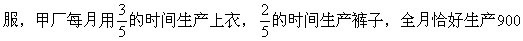
产1200套西服.现在两厂联合生产，尽量发挥各自特长多生产西服，那么现在每月比过去多生产西服多少套？
分析 根据已知条件，甲厂生产一条裤子与一件上衣的时间之比为2∶3，因此在单位时间内甲厂生产的上衣与裤子的数量之比也是2∶3（注意：在固定时间内，数量与每件所用时间成反比）；同理可知，在单位时间内乙厂生产上衣与裤子的数量之比是3∶4。
单说明理由：
如果甲厂生产9条裤子，则相当甲厂生产6件上衣；如果让乙厂生产这6件上衣，则相当于生产8条裤子.这就是说，甲厂生产9条裤子时乙厂只能生产8条裤子.显然甲厂善于生产裤子.类似地，如果乙厂生产9件上衣，则相当于乙厂生产12条裤子；如果让甲厂生产这12条裤子，则相当甲厂生产8件上衣.这就是说，乙厂生产9件上衣时甲厂只能生产8件上衣.显然乙厂善于生产上衣.
解：两厂联合生产，尽量发挥各自特长，安排乙厂全力生产上衣.由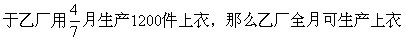
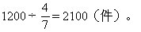
同时，安排甲厂全力生产裤子，则甲厂全月可生产裤子
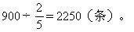
为了配套生产，甲厂先全力生产2100条裤子，这需要
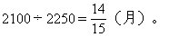
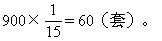
于是，现在联合生产每月比过去多生产西服
（2100＋60）-（900＋1200）=60（套）。
说明：本例是线性规划中劳力组合问题.劳力组合最简单的情况就是效率比问题.这里给出多种劳力（或机械）干两种配套活的一般分工原则：